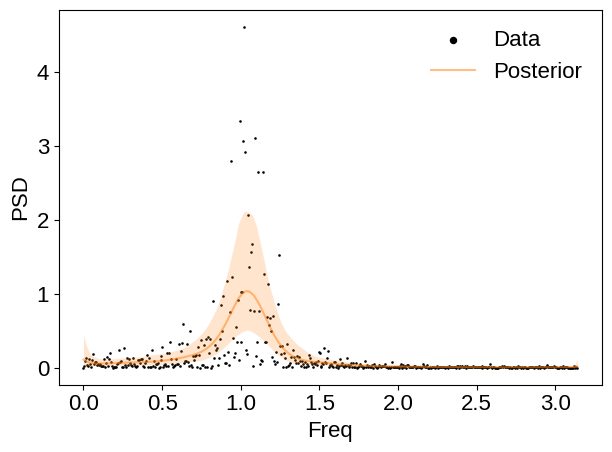
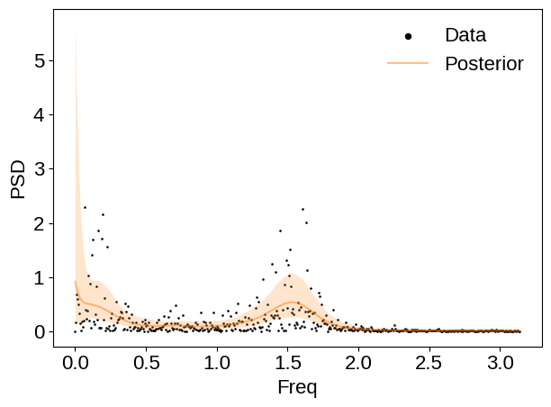
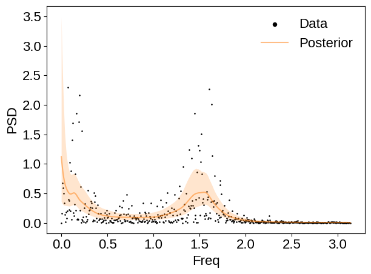

%matplotlib inline
%load_ext autoreload
The autoreload extension is already loaded. To reload it, use:
%reload_ext autoreload
Example: AR process#
First, lets generate some data from an AR process and plot it.
import matplotlib.pyplot as plt
from pspline_psd.example_datasets.ar_data import generate_ar_timeseries, plot_ar_spectrogram_psd
from pspline_psd.sample.gibbs_pspline_simple import gibbs_pspline_simple
import numpy as np
from pspline_psd.plotting import set_plotting_style, plot_psd
set_plotting_style()
Example 1: AR(3)#
data = generate_ar_timeseries(order=3, n_samples=1000)
fig = plot_ar_spectrogram_psd(data, title='AR(3) Data');
fig.savefig("ar3_data.png")
plt.close(fig)

mcmc = gibbs_pspline_simple(
data=data, Ntotal=5000, burnin=1000, degree=3, eqSpacedKnots=True, compute_psds=True, metadata_plotfn="psline_sampling_ar3.png"
)
/home/avaj040/Documents/projects/pspline_psd/src/pspline_psd/plotting/plot_sampling_metadata.py:62: UserWarning: The figure layout has changed to tight
fig.tight_layout()

fig = plot_psd(data, mcmc.psd_quantiles)

Example 2: AR(4)#
data = generate_ar_timeseries(order=4, n_samples=1000)
fig = plot_ar_spectrogram_psd(data, title='AR(4) Data');
fig.savefig("ar4_data.png")
plt.close(fig)

mcmc = gibbs_pspline_simple(
data=data, Ntotal=5000, burnin=1000, degree=3, eqSpacedKnots=True, compute_psds=True, metadata_plotfn="psline_sampling_ar4.png"
)
/home/avaj040/Documents/projects/pspline_psd/src/pspline_psd/plotting/plot_sampling_metadata.py:62: UserWarning: The figure layout has changed to tight
fig.tight_layout()

fig = plot_psd(data, mcmc.psd_quantiles)

mcmc = gibbs_pspline_simple(
data=data, Ntotal=5000, burnin=1000, degree=3, eqSpacedKnots=False, compute_psds=True, metadata_plotfn="psline_sampling_ar4_non_equal.png"
)
/home/avaj040/Documents/projects/pspline_psd/src/pspline_psd/plotting/plot_sampling_metadata.py:62: UserWarning: The figure layout has changed to tight
fig.tight_layout()

fig = plot_psd(data, mcmc.psd_quantiles)
